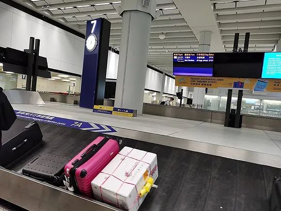

口述实录 | 万里回国后，同航班有人被确诊新冠……
原文链接 备份链接 这次疫情，也让我对祖国有了更深刻的认同，突发事件面前，我们国家的组织调配能力是一流的。 记者 | 沈 林 受访人 | 胡晓琳 最近很多在海外的同胞们都在纠结一个问题：非常时期，到底应不应该回国？或许我的经验可以给他们 …

供图：受访者
记者：潘金花
“
“要是再晚一些回来，可能会遇到更多负面情绪，因为检疫的人会越来越累。”
”
“吃到粥，广东人都要哭了。”
在历经了14个小时的飞行和无止境的等待后，刚在美国加州明德大学蒙特雷国际研究学院（MIIS）结束两个月交换项目的Temple总算在深圳南山一家酒店的大堂里喝上了一口热粥。
和这几天网络上传得沸沸扬扬的所谓“跑毒”群体不同，Temple在刚过去的这个周末原本就要回国。她所参加的交换项目上周已经结课。
早在去年10月，她就已经一并买好了往返的机票。只是她没想到，这趟旅程从去到回，竟然会如此波折和“掐点”。
以下是她的口述，经过界面新闻整理编辑。
我们一行人是在1月25日那天到美国的。这是学校间的一个项目，研究生和本科生都可以参加。在出发前，也就是去年10月，我们就已经订好了来回的机票。但还没出发，我们的航班就已经开始被取消了，只好在11月又买了其他飞美国的航班。
1月25号其实挺特别的，因为第二天，我们在南山区的学校也开始封校了。25号那天，我们还在学校收拾行李，准备出发，当时他们不让我进宿舍，我一下还没反应过来。之后，我们就戴着口罩去了蒙特雷，发现当地没有人戴口罩，我们就赶紧摘了。
这次我们并不算提前回国。尽管在蒙特雷的课程因为疫情受到了很多影响，但项目还是顺利结束了，而下一周就是春假，所以我们差不多在这个时候也该回来了。
但在2月9号的时候，我们又收到了返程航班被取消的通知。美国航空说不飞了，在3月二十几号前是不会再飞了，说是飞行员不愿意飞中国。更要命的是，香港3月初又把船给停了，公共交通也限制了。
我们一开始是从香港出发的，因为香港离深圳很近。但现在要是飞香港的话，就得自己想办法回深圳，还得冒着在香港被隔离的风险。
有些同学想在日本转机回国，连过境签都办好了，没想到日本又成了疫情重灾区。只好继续改签，在香港转机到沈阳，然后再回深圳和广州。这样“折腾”是为了避免在香港入境，因为从19号开始，香港就要对来自疫情严重国家或地区的旅客强制隔离14日。
在我15号凌晨坐的那趟国泰航班上，也是满满当当的，我原本以为这个时间不会有多少人出国，能自己一个人坐一排。我旁边坐着两个香港人，我猜他们也是赶在19号之前回来的，整飞机的乘客，我感觉要么是学生，要么就是一些华人，大家都赶着回来。

3月16日早上，Temple乘坐的航班降落在香港机场。供图：受访者
其实我差点就回不来。我听这两个香港人讲，现在机票的价格已经炒到十几万了，我们学院说是给我们提供3000块人民币的改签费用，但当时改签一张票已经要8000多了。我后来是直接打电话给美国航空，要求他们给出解决方案，才改成了这趟国泰航空的航班。
原本我是不敢那么“理直气壮”的。我们基本都住在美国家庭里，房东太太Colin听说了我们的遭遇后，立马打电话给美国航空开始骂他们：“你们的决定为什么要影响我们的行程”，“必须给一个解决方案，而且不能再花我们一分钱”，“圣何塞不能飞，就从旧金山出发”。
我听说Colin发飙之后也有了底气，开始给美国航空打电话，要求改签成同样的旧金山-香港直飞航班。Colin当时还说，Temple在哪里，我接过来搞定了再送回去，我说，我能行。
我是在航班被取消的第二天成功改签的。当时我打了好几轮的电话，从早上八点开始，一直打到下午才联系上客服，因为每一轮电话都要排一个小时的队，要是错过了，就得再等一个小时，我只能不停地打。
后来美国航空也因为Colin投诉的关系，没有要我们给500美元的改签费，只是我们一直都在担心，航班会不会被再次取消。但我在值机的时候才知道，美国航空给我改的其实是一张全价票，价格大概是1000到2000美元。
我当时特别惊讶，因为之前我在携程上买来回机票，才5000多块人民币，1月飞美国的时候用了一程，所以应该还剩2000多。我们一共有11个人，15号坐国泰航班回国的是7个人，我想剩下几位原本打算从日本转机的同学，在改签上应该都花了不少吧。

蒙特雷的机场快线车站。供图：受访者
下飞机的时候，我们还看了一下，公务舱和头等舱都是全满的，我们坐的经济舱也是。我原本以为飞机会很空，没想到不是。机场倒是很空。
我们的航班原定是14号半夜在旧金山机场起飞，后来延误到15号凌晨1点多。其实那天下午我们就已经到机场了，因为担心安检可能要花很多时间。Colin当时还说，要是再延误的话，干脆就把我们从旧金山弄回去算了。
不过，走去出发大厅的一路上，我们都没见到什么人。只有飞中国的登机口是人挤人的，其他登机口，我都没看到有很多人在那里等。1月25日在洛杉矶过海关准备转机的时候，机场倒是人山人海，我们后来都没赶上飞蒙特雷的航班。
在旧金山机场，工作人员都戴着口罩，亚洲面孔的旅客基本也都有戴，只是一些外国人不戴。我坐机场快线过来的时候，很惊讶地发现司机也不戴口罩，他上车就开始听歌、讲电话、吃他的饭，非常地放松。

左：机场快线的司机并没有戴口罩；右：当天下午旧金山机场的人并不多。供图：受访者
在机场值机、过安检、登机的时候，其实没有人来测我们的体温，在飞机上，也没有专门的隔离区，大家都戴着口罩，看起来都挺健康的。不过在吃飞机餐的时候，我斜前方还有后面的两位乘客，都直接在头上套了一个白色塑料袋在吃，感觉中国乘客彼此之间都挺害怕的。
在香港降落之后，我们要自行申报是否有咳嗽等症状，有的话要去量体温，没发热就可以排队出机场，香港可能也是不想大家都留在它那里吧。
出了机场之后，一切就很不一样了。我们学院直接包车送我们到了深圳湾口岸，过海关之后，就有政府的车辆在那里等，以街道为单位，把大家按目的地分成市外、市内、省外、省内。只不过因为排队的人和关卡都很多，我们花了快四个小时才过完海关。
我有同学前两天也从英国回到了成都，他连走去航站楼的机会都没有，下了飞机的舷梯之后，直接就被大巴拉去了隔离酒店。

在深圳湾口岸等待安排。供图：受访者
另外，中国国籍和外国国籍也分得很清楚，会被送去不同的地方。
我们7个人后来也分开了，我和两个同学在南山的酒店隔离，有人去了龙华，有人在蛇口医院隔离，也有人回了东莞，还有人在口岸被取样之后，直接被救护车送回了家。
我是在酒店隔离的第二天，也就是周二被取样的，现在正在等检测的结果。疾控中心还给我打电话说，过两天要是结果阴性，学校愿意接收我，就可以回学校继续隔离到14天期满，但前提是要有人能将东西送到我的门口。
我觉得对方考虑得挺周全的。在酒店隔离，每天会有人来给我量体温，三餐和生活物资也有人送上来，只是工作量太大了，有时会比较晚。
当时在美国其实还挺不一样的。比如在蒙特雷还有旁边的一些小镇，其实都没人戴口罩，偶尔看到一两个中国人戴着，自己也觉得戴着挺不好意思的，大家都看着你。
我的朋友还让我小心一点，因为有人试过在街上被辱骂，但我遇到的人都很好，没有觉得身边的人会特意避开我，甚至会主动问我，需不需要帮助。
感觉除了特朗普以外，美国人都挺谨慎的。蒙特雷很快就有一些举措，给大家提供心理、法律上的帮助，课程也都有调整，课室还放了酒精抹布，每一节课我们都会用，餐厅和超市也都有免洗洗手液，只不过家里的预防措施不多。春假以后，美国的很多大学也都要关闭校园了。
其实我们原本有一个结课典礼，只是因为疫情的关系取消了。Colin原本还打算给我们办一个派对，说我们怎么样也要玩一下，但就在我们统计了人数之后，加州就颁布了禁令，10人以上的聚会全部都要取消，而我们有11个人。
在美国出现疫情之后，超市里基本都找不到口罩，后来我每周二都去药房蹲点，好不容易才买到两盒。有些中餐馆的老板也会联系一些货源，但价格比较贵。不过，超市里的其他东西倒是不缺，蒙特雷是这样。洛杉矶、旧金山的超市货架会空一些，但也没到抢光的地步，只听说纽约抢得比较厉害。
我离开的时候，美国已经有很多个州宣布紧急状态了。不过我们的老师说，这只是一个法律程序，只有宣布紧急状态，才能动用拨款，并不一定代表疫情很严重。我有些老师还会讨论说，其实用不着这样，股市大跌之后，退休金已经大幅缩水，现在又有旅行禁令，做口译这一行的都没法工作了。

蒙特雷是太平洋沿岸城市，仅拥有约3万人口，平日里街上的行人并不多。供图：受访者
我在蒙特雷遇到的人，都没有觉得疫情很严重，可能还是觉得季节性流感更严重。但他们也不敢去旅行，可以说是谨慎但不恐慌吧。但有时候，谨慎和无知之间其实也没有差很远，有些人很大胆，觉得没什么，也有些人觉得，只要做好一切预防措施就没事。
美国是比较少有的，没有带薪病假的发达国家。医疗体系下，看病的费用又非常贵，这可能导致了很多人瞒报。我陪房东去过一趟医院，看到电梯上写着如果出现疑似症状，请及时就医，但并没有提到有关减免检查费、要如何检查的内容。我们在美国交换的时候，即使买了保险，也不希望自己生病，因为看病真的太贵了。
很多人会觉得，我们的行程“掐得很好”，说国内严重的时候，你们就走了，国内控制好了，你们就回来了。
能在这个时候回来，可以说我是幸运的，但过程同样是艰辛的。听到“千里送毒”、“回来当大爷”的说法，我们也挺难受的，因为大多数人并不想添乱。
我也有和检疫的工作人员聊天，他说接下来只会越来越严格，要是再晚一些回来，可能会遇到更多负面情绪，因为检疫的人会越来越累，他们也不能休息。
（应受访者要求，Temple为化名，国内就读大学名称不作公开）
未经授权 禁止转载

原文链接 备份链接 这次疫情，也让我对祖国有了更深刻的认同，突发事件面前，我们国家的组织调配能力是一流的。 记者 | 沈 林 受访人 | 胡晓琳 最近很多在海外的同胞们都在纠结一个问题：非常时期，到底应不应该回国？或许我的经验可以给他们 …
原文链接 备份链接 摘要：1月26日晚间，杭州官方发布“新型冠状病毒肺炎”最新通报，25日9时至24时，杭州市新增新型冠状病毒感染的肺炎确诊病例15例，其中2名确诊患者正是乘坐TR188次航班抵达杭州萧山机场的乘客。 文 | 殷盛琳 程静 …
原文链接 备份链接 无论是港警、医生、护士、议员，疫情面前我们都只是普通人，都有机会被感染。如果说反修例事件让我们在香港得这些爱国爱港人士紧密联系在一起，那么新冠肺炎疫情让我们认识到作为中国人有多幸福。 记 者 | 周 洁 受访人 | 虚 …
原文链接 备份链接 空旷的意大利机场。 记者：陈晓双 “ 因担心意大利疫情加剧，不少当地留学生选择回国。飙升的票价、不断取消的航班、各国趋严的出入境政策，让他们行程充满波折、等待和风险。 ” 意大利作为欧洲率先爆发新冠肺炎疫情的国家，仅三 …
原文链接 备份链接 《小酒馆》，是燃财经旗下的故事栏目，真人真事，讲述创新经济时代的人生百态。本文为第35期。 作者 | 金玙璠 孟亚娜 陈琪 编辑 | 魏佳 “新冠疫情，中国打上半场，世界打下半场，华人留学生打全场”。这虽然是一句调侃， …